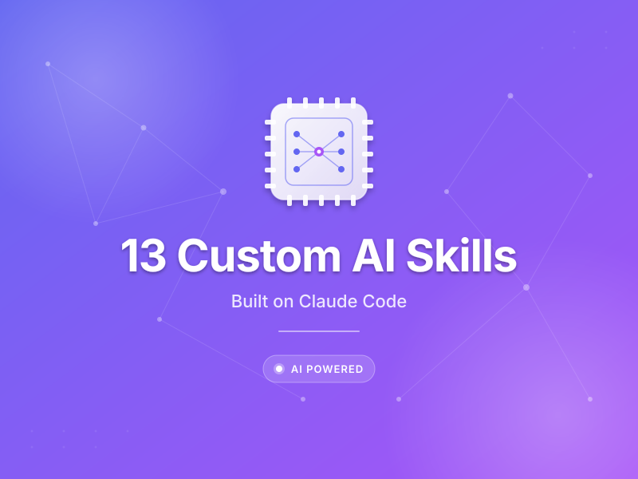
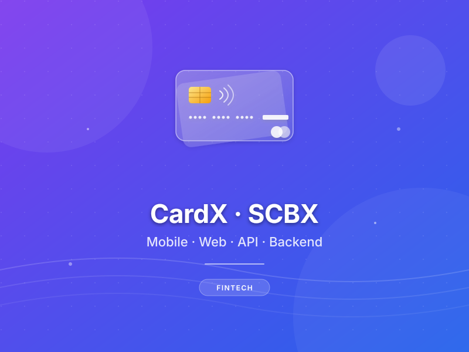
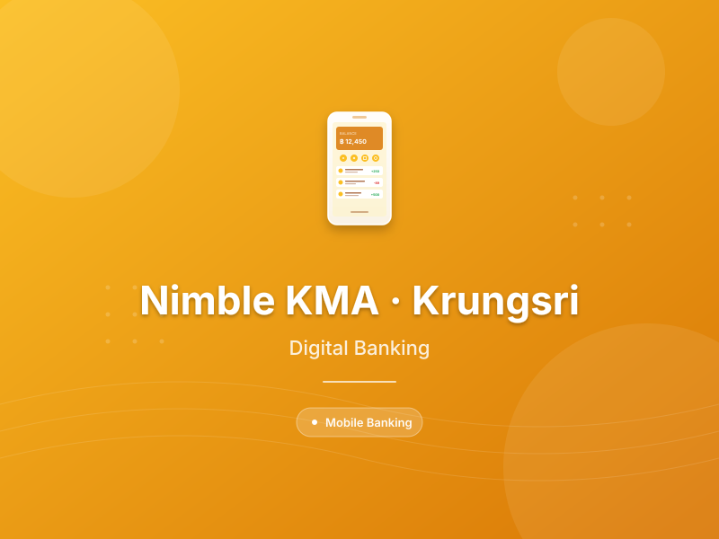
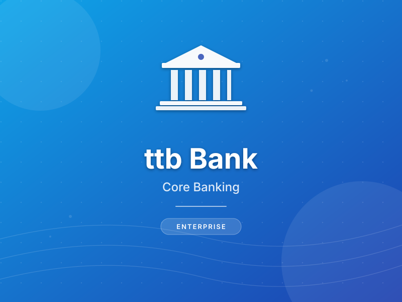
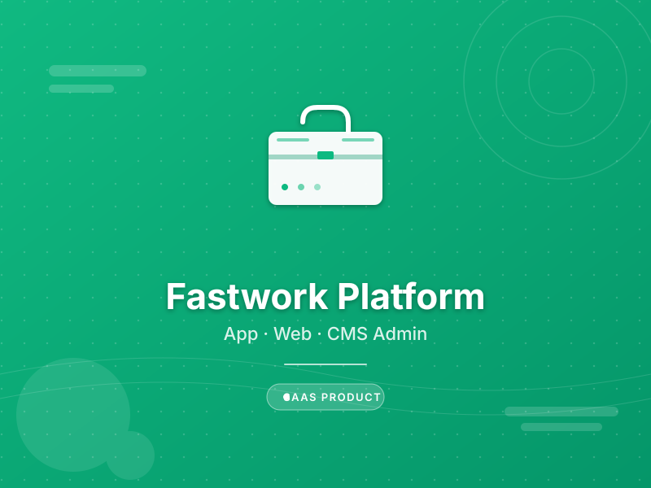
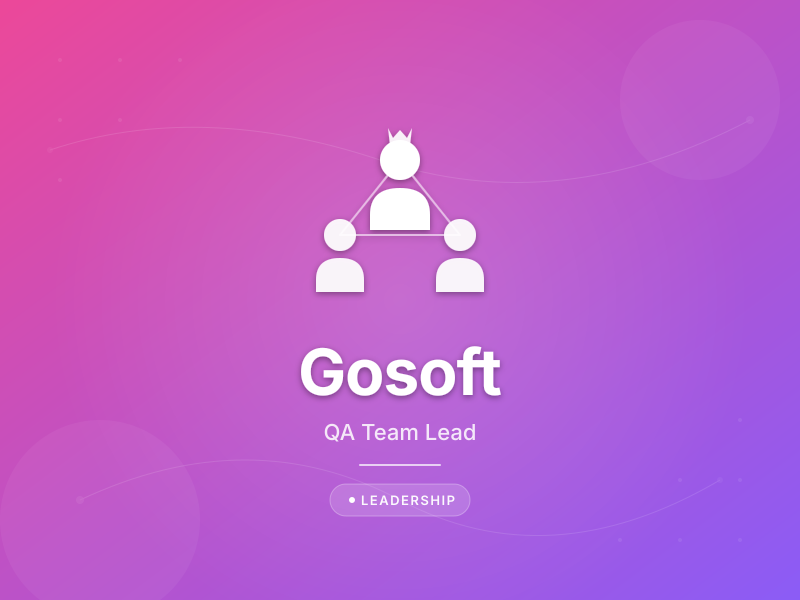
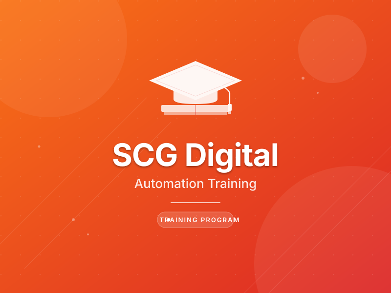
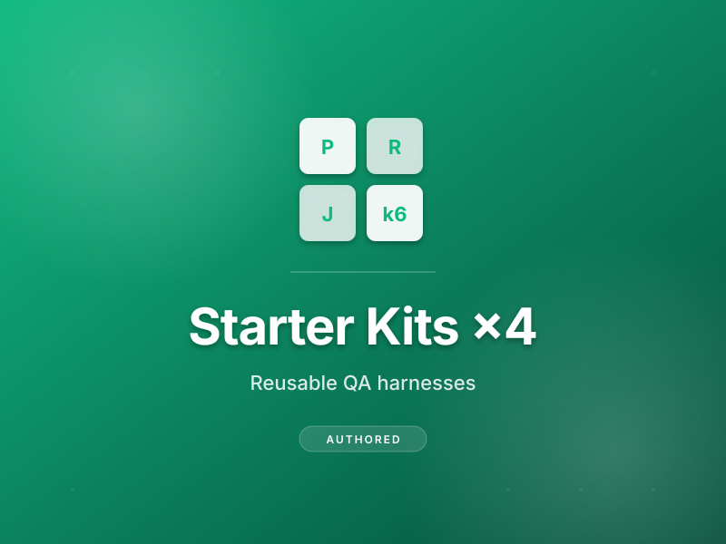

About
Quality Assurance Team Lead with 6+ years across manual and automated testing on Web, Mobile, API, Smart TV, and core banking platforms. Currently leading a QA team of 5 at ONE31 · The ONE Enterprise across 7+ platforms for the oneD streaming product.
QA Lead & Automation Engineer.
I write test plans, push for more automation, and build quality in from the start instead of bolting it on at the end. Aim for 95%+ test coverage in UAT and Dev.
- Location: Bangkok, Thailand
- Phone: +66 95-490-1028
- LinkedIn: nirawit-thepsawade
- City: Bang Na, Bangkok
- Experience: 5+ years in QA
- Degree: M.Sc. Digital Business (KMUTT)
- Email: nirawit.mail@gmail.com
- Freelance: Open to opportunities
Mostly use Robot Framework, Appium, Playwright for web/mobile/Smart TV automation, Apache JMeter and k6 for performance, and GitHub Actions for CI/CD. At ONE31, built a Device Farm (physical lab) for parallel cross-platform regression across 7+ platforms, and drive a 70 / 30 automation-to-manual ratio across the team. Hands-on with Grafana for test result dashboards and pipeline health monitoring.
Years in QA
% Target Coverage
Custom AI Skills Built
Platforms Tested
Worked At
Seven tenures across six direct employers (6+ years) · QA roles from Software Tester to QA Team Lead. Returned to Doppio for a Senior role after ttb. Consultancy clients via Doppio listed in the Resume below.
9 client engagements at Doppio (CardX, Nimble KMA, The One Card, CDS, Top Online, Makro Click, Office Mate, Gosoft, SCG Digital). Details in Resume.
Skills
Core competencies built across web, API, mobile, POS, and core banking testing · with a focus on automation frameworks, CI/CD pipelines, and AI-assisted QA workflows.
Tech Stack
Tools I work with day to day · automation frameworks, performance, CI/CD, data, and runtime.


Also working with: DBeaver · MongoDB Compass · GitHub · Bitbucket · Grafana · Claude Code (15 custom AI Skills)
Resume
6+ years across web, API, mobile, Smart TV, POS, and core banking. From software tester to QA Team Lead · building device farms, automation frameworks, and team processes.
Summary
Nirawit Thepsawade
QA Team Lead with 6+ years in manual and automated testing across Web, Mobile, Smart TV, API, MySQL, and MongoDB. Lead teams, build device farms, and set KPIs that enforce automation discipline. Work closely with devs and PMs to ship releases the team can trust.
- The Origin Condo Sukhumvit 105, Bang Na, Bangkok 10260
- +66 95-490-1028
- nirawit.mail@gmail.com
Education
M.Sc. Digital Business
September 2024
King Mongkut's University of Technology Thonburi (KMUTT) · Bangkok
Independent Study: Applying Artificial Intelligence to Transcribe and Summarize Audio Files. GPA 3.40.
B.Sc. Business Administration · Information Systems
May 2019
Rajamangala University of Technology Phra Nakhon (RMUTP) · Bangkok
GPA 3.20.
Professional Experience
QA Team Lead
June 2026 · Present
ONE31 · The ONE Enterprise (ONE 31 COMPANY LIMITED) · Bangkok, Thailand
Owned streaming-domain QA: DRM playback verification (Widevine · FairPlay · PlayReady per platform), adaptive bitrate (ABR) quality-switch validation under varying network conditions, and transcoding correctness across resolutions and devices.
- Built and run a Device Farm (physical lab) with pooled test devices for parallel cross-platform regression, eliminating serial device-swap queues.
- Defined team KPIs with a 70/30 automation-to-manual target: regression, smoke, and healthcheck runs automated via CI; UX, edge cases, and device-specific quirks covered manually.
- Produced sprint test reports with defect trends, platform breakdowns, and coverage summaries, written for product and dev to act on, not just pass/fail counts.
- Set up a prod incident UI check routine: a quick critical-path checklist across platforms so the team can verify user-facing behavior the moment an alert fires, before infra confirms root cause.
- Acted as QA Ops support: monitored pipeline health and test stability via Grafana, triaged environment and infra issues that blocked test runs.
- Built internal tools to support team workflow: test data generators, setup/teardown helpers, and vibe-coding aids that let devs self-test faster without waiting on QA.
- Embedded knowledge sharing as a team norm: regular internal sessions, handoff-ready docs, test cases, and scripts so any teammate can onboard or pick up coverage immediately.
- Handled both manual and automation testing across all platforms: manual for exploratory, UX, and device-specific cases; automation for regression, smoke, and CI healthchecks.
- Served as the decision point for the team on test scope, risk prioritization, and go/no-go calls per release cycle.
- Represented QA in cross-functional meetings with product, dev, and management: surfaced blockers, aligned on scope, and brought back clear direction for the team.
Quality Assurance Lead
March 2026 · May 2026
Ayodia Company · Bangkok, Thailand
First QA Lead in the org. Built the QA function from scratch: defined processes, set governance, and got the team running with consistent standards.
- Led manual, automation, and performance testing across web and API systems.
- Wrote test plans from scratch and ran requirements reviews with dev and product to catch gaps before dev started.
- Defined and tracked QA KPIs: defect leakage, test coverage, automation rate, cycle time.
- Mentored team members on testing practices, automation basics, and how to write test cases that actually find bugs.
- Built 15 custom AI Skills on Claude Code to streamline test case generation, test data setup, and documentation.
- Integrated QA into CI/CD workflows for faster, more reliable deployments.
QA Engineer
November 2025 ·March 2026
Fastwork HQ · Bangkok, Thailand
- Owned QA across manual, automation, and performance for the Fastwork platform and CMS.
- Managed CI/CD merge workflows, deployments, and post-release sanity verification.
- Key projects: Fastwork App & Web, Fastwork CMS Admin.
Senior QA Automation Engineer
April 2024 · November 2025
Doppio Tech Co., Ltd. · Bangkok, Thailand
- Led multi-project QA teams across Web, Mobile, API, and Backend with 1:1 mentoring and coaching.
- Built automation frameworks with Jenkins, Selenium WebDriver, Appium.
- Designed custom pipeline dashboards and MR rejected summary reports.
Test Engineer
April 2023 ·April 2024
TMBThanachart Bank (ttb) · Bangkok, Thailand
- Led automation testing across Web, Mobile, API, and Core Banking systems.
- Mentored junior QA engineers and interns on best practices.
- Integrated tests into CI/CD, maintaining 95%+ coverage in UAT and Dev.
QA Automation Engineer
June 2022 ·June 2023
Doppio Tech Co., Ltd. · Bangkok, Thailand
- Automation for Web, Mobile, and API using Selenium WebDriver and Appium.
Software Tester
August 2020 ·May 2022
Magicbox Solution Co., Ltd. · Bangkok, Thailand
- Manual testing, defect logging, Agile sprint participation, and test documentation.
Featured Builds
Two deeper looks at systems I built and run in production · the end-to-end shape a full QA engagement can take, both at the test-harness layer and at the team-workflow layer.
Web/API Regression Harness · Multi-Channel Reporting
Playwright + TypeScript regression suite with a Python-driven, multi-channel custom reporting pipeline. Raw test JSON in → Typst-compiled executive PDF, per-test PDFs with embedded screenshots, Discord embed, and SMTP email out. Release readiness is decided by a 4-criteria rubric, not a gut call.
Framework
- Playwright 1.44+ · TypeScript 5 · Node 20
- 3-tier Page Object Model (base → pages → specs)
- 707 API specs across 10 domains (FO + BO)
- Multi-env config: dev / at / ci / prod
- GitLab CI: lint → parallel UI + API workers → auto-rerun on fail
- Custom fixture proxies every HTTP call into the report · zero manual instrumentation
Custom Reporting
- Python aggregator: merges UI + API JSON, pulls GitLab trend history, derives a verdict
- Typst-compiled single-page executive PDF · verdict banner, KPI tiles, pass-rate sparkline, per-module delta vs previous
- Per-test PDFs (PDFKit) with 16:9 screenshot pairs and step-by-step flow
- Bilingual narrative (Thai + English) · non-technical summary with deploy recommendation
- Cross-channel reconcile(): first-pass fail + rerun pass → flaky, not green
Notifications
- Discord webhook: embed with verdict icon, test tallies, failed / flaky list (first 8 / 5), report URL
- SMTP email: HTML body + exec-report.pdf attached, recipient list configurable per pipeline
- Trigger: GitLab CI notify stage
alwaysafter regression - Verdict logic shared with the PDF · same rubric, same reconcile, same source of truth
QA AI Skills System on Claude Code
A team-wide AI workflow system, not a folder of prompts. 15 custom Claude Code Skills mapped to the QA SDP §5 process so the whole team invokes the same context, output format, and quality rubric · instead of every QA running their own prompts in ChatGPT. Documented openly in a 4-part Medium series (EP1 → EP4).
Architecture
- Shipped as a Claude Code plugin · install once, every QA gets the same skill catalogue
- Each skill is a focused markdown file with prompt, scope, examples, and output format
- Skills compose: requirement-analyzer → test-case-writer → test-case-reviewer
- Onboarding doc + Decision Tree + IO-flow diagrams so a new QA is productive in < 1 hour
Process Coverage
- Plan: test-plan-writer (SIT / UAT / Perf), test-matrix-generator
- Design: test-case-writer, data-type-matrix-generator, requirement-analyzer
- Review: test-case-reviewer (peer-review checklist)
- Execute: bug-report-writer, automation generators (Playwright + Robot Framework)
- Report: test-report-writer, perf-result-analyzer, perf-typst-report
- Ops: weekly-update-writer, handoff-writer
Adoption & Cost
- EP2 dug into token cost · skills get dynamic context, not the full prompt every call
- EP3: the skills that didn't survive · when AI is the wrong tool (effort estimates, for one)
- EP4: opening the lid on how a skill is actually structured internally
- Same skill catalogue runs across sprints · no more "everyone has their own prompt"
- Quoted by team in PR reviews + sprint planning, not just ad-hoc usage
Portfolio
Selected QA projects across banking, e-commerce, and SaaS · covering automation frameworks, CI/CD pipelines, and AI-assisted workflows.
- All
- AI & Workflow
- Automation
- Banking
- CI/CD

13 Custom AI Skills
Built on Claude Code · QA team workflow (see Writing for the series)

CardX · SCBX Group
E2E coverage across Mobile / Web / API / Backend · scalable regression suite

Nimble KMA · Krungsri Bank
Mobile + API regression automation · digital banking platform

ttb Bank · Digital Banking
95%+ UAT coverage · Mobile / Web / API automation (Selenium + Appium) · faster regression cycle

Fastwork Platform
App & Web · CMS Admin · Performance

Gosoft · QA Team Lead
Application, Web, API, Backend testing

SCG Digital · Automation Training
Instructor · Web automation onboarding

Starter Kits · 4 authored
Reusable QA harnesses · Playwright · Robot · k6 · JMeter (config-driven, GitLab CI included)
Services
What I bring to a QA function · from setting up automation from scratch to operating at scale with AI-assisted workflows.
Web & API Automation
Full regression, cross-browser, and E2E automation for complex web apps and CMSs. REST contract testing, payload validation, and auth flows. Frameworks: Playwright, Robot Framework, Selenium, Postman.
Mobile & POS Testing
iOS and Android automation for digital banking apps (Nimble KMA, CardX) using Appium and Robot Framework. POS system validation: transaction flows, payment integration, and hardware-software interaction.
Core Banking Validation
End-to-end testing of banking workflows at ttb, Krungsri (Nimble), and SCBX (CardX). Account flows, transaction integrity, regression stability, and UAT coordination with stakeholders.
Performance & Load Testing
Workload modelling, NFR design, and bottleneck analysis using Apache JMeter and k6. Identify response time issues, throughput limits, and system stability risks before they hit production.
CI/CD & Pipeline Engineering
Authoring Jenkinsfile / GitLab CI / GitHub Actions pipelines covering test runs, quality gates, and Slack / email notifications. Grafana dashboards for pass rate, flaky tests, and defect trends.
AI-Assisted QA Workflows
15 custom AI Skills built on Claude Code (started at 13, see the Medium series): test case generation, bug report drafting, regression triage, test data setup, and documentation. Less manual work each sprint.
How I Onboard
Concrete deliverables a hiring manager can expect when I join a team · not promises, just the shape of the first quarter.
Audit & Assess
- Map current test coverage · gaps, redundancies, manual-only paths
- Audit CI/CD touchpoints & identify friction
- Baseline KPIs: defect leakage, coverage %, cycle time
- Shortlist the biggest risk items by impact × effort
Frameworks Live
- Automation framework running end-to-end in CI
- AI Skills configured for the team's stack · test gen, bug reports, triage
- First metrics dashboard live (Grafana / built-in CI reports)
- Pipeline templates documented so juniors can extend safely
KPIs Reported
- Automated regression running every sprint, results visible to PMs
- Junior QAs trained · writing & extending tests on their own
- Manual regression hours measurably down; defect leakage tracked
- Process docs in place so the system survives a handover
Scope flexes by engagement size · full-time QA Lead, fractional setup, or focused automation sprint. Let's scope yours →
Talks & Workshops
Sessions I've run for engineers and students · focused on test automation, AI-assisted QA workflows, and setting up a QA function in practice.
Web Automation Bootcamp
Instructor-led training sessions to onboard engineers into web automation. Covered framework setup, locator strategies, and writing maintainable E2E tests from scratch.
AI Skills in QA · Knowledge Sharing
Sharing the design and operation of the 15 custom AI Skills built on Claude Code with PMs, devs, and other QAs · what to use them for, how they connect, and how to extend them safely.
QA & Test Automation in Industry
Returned to both alma maters to share what QA actually looks like in industry · the workflow, the tools, and how an Information Systems / Digital Business graduate ends up running a QA function.
Open to guest lectures, internal workshops, and meetup talks. Reach out →
Writing
A 4-part series on Medium about how my QA team stopped using ChatGPT ad-hoc and built 13 custom AI Skills on Claude Code · what worked, what we threw away, and what's under the hood.
Find Your Fit
Tell me what you're hiring for · or paste a job description · and I'll show you how my profile maps to your needs. Runs entirely in your browser, no data sent anywhere.
Contact
Looking for a Senior QA or QA Lead role in Bangkok or remote · open to talk anytime.
Location
Bang Na, Bangkok 10260
Thailand · GMT+7
Phone
+66 95-490-1028